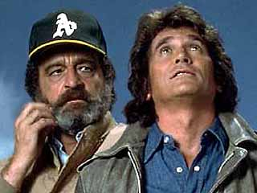

Highway to Heaven !!!!!
The series stars Michael Landon as Jonathan Smith, an angel sent down to earth "on probation", and his human companion Mark Gordon, played by Victor French, Landon's co-star from Little House on the Prairie. Jonathan and Mark are given "assignments" by "The Boss" (God) where they are required to use their humanity (and sometimes a little bit of "The Stuff") to help various troubled souls overcome their problems. These problems include families dealing with sick loved ones; "all-around losers" who are encouraged to find their self-worth; people coping with loss of family such as war widows; wealthy and greedy businessmen being encouraged to use their wealth for good; charlatans who used religion and civil rights for personal gain; and discouraging prejudice in regard to people of different ethnicities, socioeconomic backgrounds, and disabilities. While dealing sensitively with these situations, the show also uses humor, particularly between Jonathan and Mark.